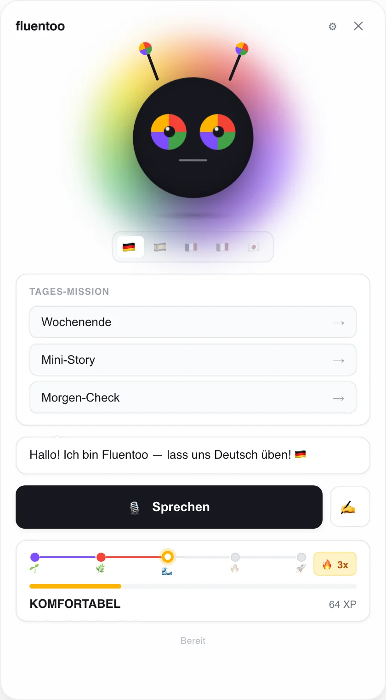
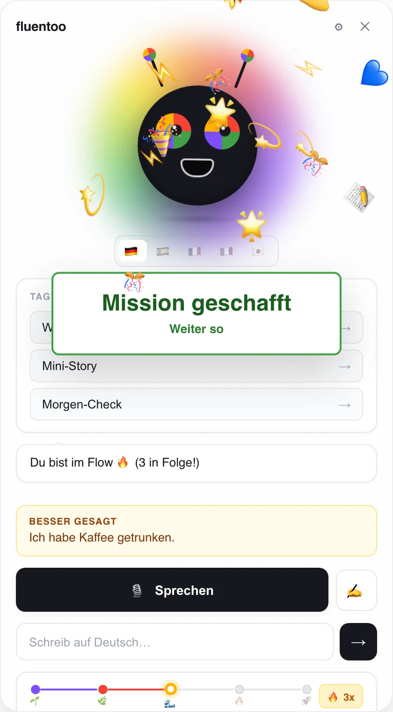
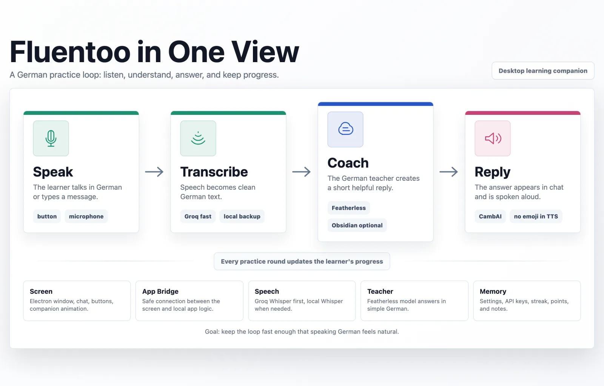

Small enough to keep open. Friendly enough to come back to.
A frameless, always-on-top window. Pick today's mission, hit Sprechen, and talk. The character reacts to how it went, the streak keeps you honest, and corrections show up as “Man sagt besser …” instead of red ink.


One loop, tuned for speaking.
The whole design goal is latency: if a reply takes too long, speaking stops feeling like a conversation.
Speak
Talk into the mic, or type if you're on a train.
MediaRecorder · Web SpeechTranscribe
Fast hosted Whisper first; on-device Whisper when you're offline or keyless.
Groq · transformers.jsCoach
An LLM tutor replies in simple A2–B1 German and judges the mission.
Featherless · Obsidian notesReply
The answer is spoken in a natural German voice, with browser speech as fallback.
CambAI TTSDaily missions
Morgen-Check, Restaurant, Wochenende, Mini-Story. Any genuine attempt counts.
Five fluency stages
XP, a streak multiplier and level-up moments from Schüchtern to Fluentoo Level.
A character with moods
The avatar laughs, smiles or looks a little sad depending on how the round went.
Your own vocabulary
Point it at an Obsidian vault and your word lists flow into the tutor's context.
Habit nudges
A gentle reminder every 45 minutes keeps the streak alive.
Local first
Progress and settings stay on your machine. Bring your own API keys.
Decisions worth explaining.
- Graceful degradation everywhere. Hosted STT → local Whisper; CambAI voice → browser speech. With zero keys besides the LLM, it still works end to end.
- Structured output from a chatty model. The tutor ends mission replies with a
MISSION_RESULT: PASS|FAILline that's parsed and stripped; a local heuristic covers the case where the model forgets. - Secure Electron defaults. Context isolation on, no Node in the renderer, a narrow preload bridge and a strict Content-Security-Policy.
- No UI framework. The avatar, emotions and confetti are plain CSS (conic gradients and keyframes), so the window idles at near-zero cost.
Built as a hackathon project and kept small on purpose: about 2,300 lines of vanilla JavaScript, HTML and CSS.

Try it locally.
macOS tested. You need a Featherless key for the tutor; voice keys are optional.
git clone https://github.com/kaiser-data/fluento
cd fluento && npm install
cp .env.example .env # add your keys
npm start